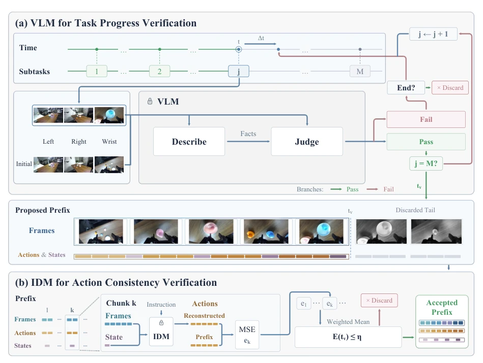
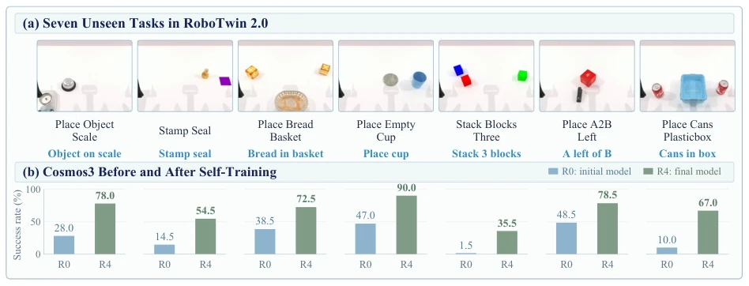
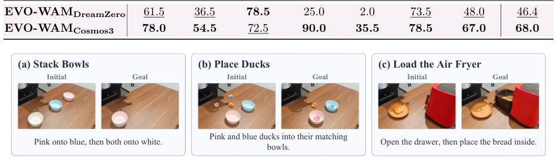
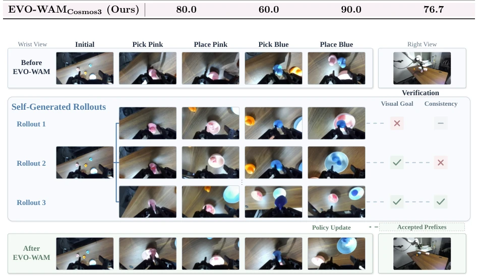
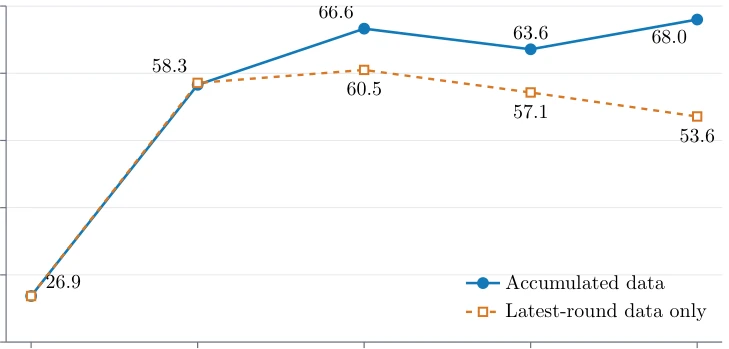
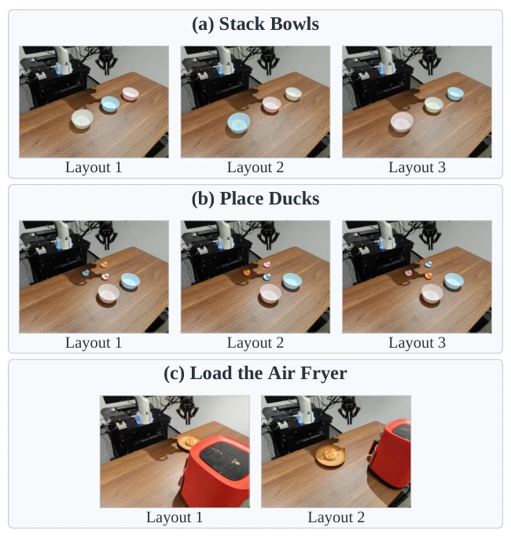
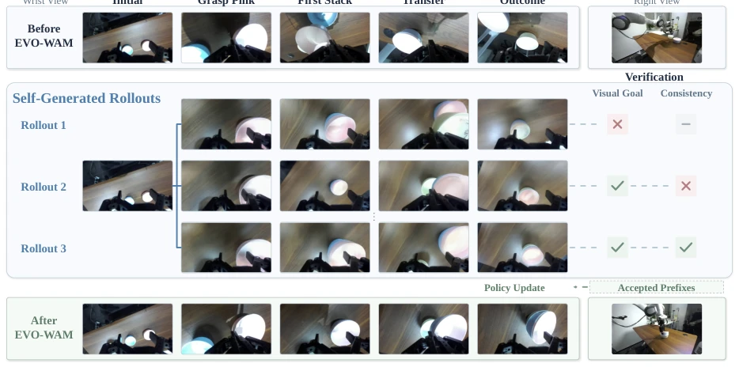
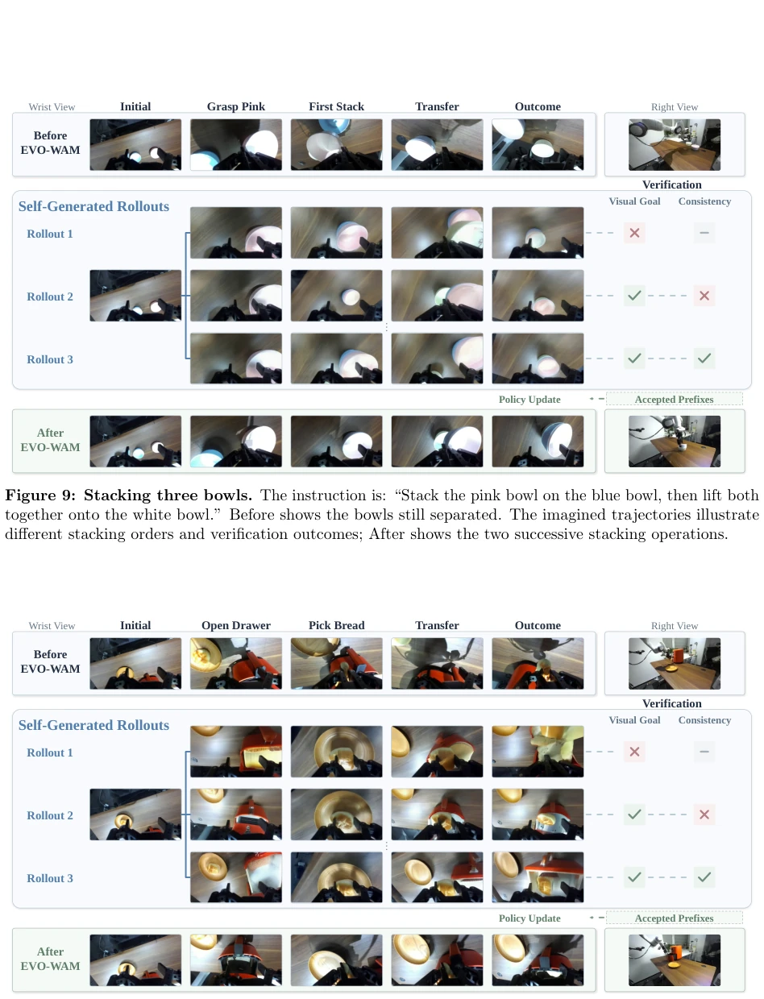

Figure 2: Overview of EVO-WAM. (1) Generate: WAMr−1 autoregressively generates video-action-state trajectories from an initial scene and task instruction. (2) Verify: a VLM identifies task-completing prefixes, and an IDM checks their video-action consistency. (3) Improve: verified prefixes accumulated across rounds are combined with the original training data to obtain WAMr, which generates candidates for the next round.

Figure 3: Video-action verification. (a) A VLM checks subgoals one at a time through description and judgment. (b) An IDM reconstructs actions from the generated videos and compares them with WAM- generated actions at the fixed visual endpoint. Prefixes passing this check undergo endpoint vote confirmation before entering training.
Figure 1: EVO-WAM improves world action models through verified experience. Left: unseen tasks in simulation and long-horizon composite tasks in the real world. Middle: the generate-verify-improve cycle, where learning from verified rollouts improves task execution. Right: Cosmos3’s performance gains over successive rounds in simulation and the real world.

Figure 4: Unseen-task improvement in RoboTwin 2.0. (a) Example task scenes. (b) Cosmos3’s per-task success rates before self-training (Round 0) and after four rounds (Round 4).

Figure 5: Real-robot tasks. Initial and goal scenes for three unseen composite tasks.

Figure 6: Placing two ducks. Top and bottom show real executions before and after EVO-WAM. The middle shows generated candidates and their visual-goal and video-action consistency checks; prefixes passing both checks are used to update the policy.

Figure 7: Effect of data accumulation. Success in adaptation scenes across self-improvement rounds under the two configurations described above.

Figure 8: Initial configurations for physical evaluation. Three layouts for Stack Bowls, three for Place Ducks, and two for Load the Air Fryer. Each task has ten trials per evaluated policy: 3/3/4 across the three-layout tasks and 5/5 across the two air-fryer layouts.

Figure 9: Stacking three bowls. The instruction is: “Stack the pink bowl on the blue bowl, then lift both together onto the white bowl.” Before shows the bowls still separated. The imagined trajectories illustrate different stacking orders and verification outcomes; After shows the two successive stacking operations.

Figure 10: Loading the air fryer. The robot must pull the red handle to open the drawer and transfer the bread from the plate into it. Before shows the bread still held by the gripper. Rollout 1 distorts the drawer and bread during transfer, while Rollout 3 passes verification. After shows drawer opening, bread transfer, and release.